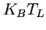
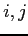

In this section we show, in a cursory fashion, how it is possible to use the MEP simulation results to obtain faster Monte Carlo simulation.
The method is surprisingly simple and gives very fast and accurate results as it will be possible to see in the example reported in a next chapter. First of all, we simulate a device by means of the simplified MEP model. When the simulation reaches the stationary solution, we save it and use it as a starting point for the Monte Carlo simulation. What it is done in GNU Archimedes is very simple. It uses the electron density, the potential, and what is the most important, the electron energy as a starting point. Concerning the energy as a starting point, it is very easy but, surprinsingly, works very well. When we start the Monte Carlo simulation, we usually assign an electron energy which is proportional to 
, i.e. related to the lattice energy. Now, the only thing to do is to assign to the electrons the energy present in the cell 
which has been computed by means of simplified MEP model. Then we assign the same potential and the same density computed previously by MEP. The results are very interesting, as you will see in a next chapter in which we report it, and are the subject of a paper under preparation.